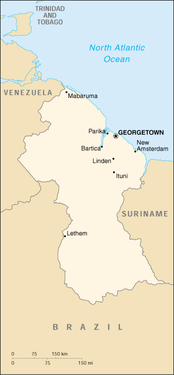

|
Guyana | |
| Introduction Geography People Government Economy Communications Transportation Military Transnational Issues | ||
|  | ||
| Guyana | Introduction | Top of Page |
| Background: | Guyana achieved independence from the UK in 1966 and became a republic in 1970. In 1989 Guyana launched an Economic Recovery Program, which marked a dramatic reversal from a state-controlled, socialist economy towards a more open, free market system. Results through the first decade have proven encouraging. |
| Guyana | Geography | Top of Page |
| Location: | Northern South America, bordering the North Atlantic Ocean, between Suriname and Venezuela |
| Geographic coordinates: | 5 00 N, 59 00 W |
| Map references: | South America |
| Area: |
total:
214,970 sq km
land: 196,850 sq km water: 18,120 sq km |
| Area - comparative: | slightly smaller than Idaho |
| Land boundaries: |
total:
2,462 km
border countries: Brazil 1,119 km, Suriname 600 km, Venezuela 743 km |
| Coastline: | 459 km |
| Maritime claims: |
continental shelf:
200 NM or to the outer edge of the continental margin
exclusive economic zone: 200 NM territorial sea: 12 NM |
| Climate: | tropical; hot, humid, moderated by northeast trade winds; two rainy seasons (May to mid-August, mid-November to mid-January) |
| Terrain: | mostly rolling highlands; low coastal plain; savanna in south |
| Elevation extremes: |
lowest point:
Atlantic Ocean 0 m
highest point: Mount Roraima 2,835 m |
| Natural resources: | bauxite, gold, diamonds, hardwood timber, shrimp, fish |
| Land use: |
arable land:
2%
permanent crops: 0% permanent pastures: 6% forests and woodland: 84% other: 8% (1993 est.) |
| Irrigated land: | 1,300 sq km (1993 est.) |
| Natural hazards: | flash floods are a constant threat during rainy seasons |
| Environment - current issues: | water pollution from sewage and agricultural and industrial chemicals; deforestation |
| Environment - international agreements: |
party to:
Biodiversity, Climate Change, Desertification, Endangered Species, Law of the Sea, Ozone Layer Protection, Ship Pollution, Tropical Timber 83, Tropical Timber 94
signed, but not ratified: none of the selected agreements |
| Guyana | People | Top of Page |
| Population: |
697,181
note: estimates for this country explicitly take into account the effects of excess mortality due to AIDS; this can result in lower life expectancy, higher infant mortality and death rates, lower population and growth rates, and changes in the distribution of population by age and sex than would otherwise be expected (July 2001 est.) |
| Age structure: |
0-14 years:
28.19% (male 100,194; female 96,309)
15-64 years: 66.89% (male 234,976; female 231,360) 65 years and over: 4.92% (male 15,324; female 19,018) (2001 est.) |
| Population growth rate: | 0.07% (2001 est.) |
| Birth rate: | 17.92 births/1,000 population (2001 est.) |
| Death rate: | 8.87 deaths/1,000 population (2001 est.) |
| Net migration rate: | -8.38 migrant(s)/1,000 population (2001 est.) |
| Sex ratio: |
at birth:
1.05 male(s)/female
under 15 years: 1.04 male(s)/female 15-64 years: 1.02 male(s)/female 65 years and over: 0.81 male(s)/female total population: 1.01 male(s)/female (2001 est.) |
| Infant mortality rate: | 38.72 deaths/1,000 live births (2001 est.) |
| Life expectancy at birth: |
total population:
63.31 years
male: 60.52 years female: 66.24 years (2001 est.) |
| Total fertility rate: | 2.1 children born/woman (2001 est.) |
| HIV/AIDS - adult prevalence rate: | 3.01% (1999 est.) |
| HIV/AIDS - people living with HIV/AIDS: | 15,000 (1999 est.) |
| HIV/AIDS - deaths: | 900 (1999 est.) |
| Nationality: |
noun:
Guyanese (singular and plural)
adjective: Guyanese |
| Ethnic groups: | East Indian 49%, black 32%, mixed 12%, Amerindian 6%, white and Chinese 1% |
| Religions: | Christian 50%, Hindu 33%, Muslim 9%, other 8% |
| Languages: | English, Amerindian dialects, Creole, Hindi, Urdu |
| Literacy: |
definition:
age 15 and over has ever attended school
total population: 98.1% male: 98.6% female: 97.5% (1995 est.) |
| Guyana | Government | Top of Page |
| Country name: |
conventional long form:
Co-operative Republic of Guyana
conventional short form: Guyana former: British Guiana |
| Government type: | republic within the Commonwealth |
| Capital: | Georgetown |
| Administrative divisions: | 10 regions; Barima-Waini, Cuyuni-Mazaruni, Demerara-Mahaica, East Berbice-Corentyne, Essequibo Islands-West Demerara, Mahaica-Berbice, Pomeroon-Supenaam, Potaro-Siparuni, Upper Demerara-Berbice, Upper Takutu-Upper Essequibo |
| Independence: | 26 May 1966 (from UK) |
| National holiday: | Republic Day, 23 February (1970) |
| Constitution: | 6 October 1980 |
| Legal system: | based on English common law with certain admixtures of Roman-Dutch law; has not accepted compulsory ICJ jurisdiction |
| Suffrage: | 18 years of age; universal |
| Executive branch: |
chief of state:
President Bharrat JAGDEO (since 11 August 1999); note - assumed presidency after resignation of President JAGAN
head of government: Prime Minister Samuel HINDS (since NA December 1997) cabinet: Cabinet of Ministers appointed by the president, responsible to the legislature elections: president elected by the majority party in the National Assembly following legislative elections, which must be held at least every five years; elections last held 19 March 2001 (next to be held NA); prime minister appointed by the president election results: President Bharrat JAGDEO reelected; percent of legislative vote - NA% |
| Legislative branch: |
unicameral National Assembly (65 seats, 53 elected by popular vote, 10 elected by the ten Regional Democratic Councils, and 2 elected by the National Congress of Local Democratic Organs; members serve five-year terms)
elections: last held 19 March 2001 (next to be held NA March 2006) election results: percent of vote by party - NA%; seats by party - PPP/C 34, PNC 27, GAP and WPA 2, ROAR 1, TUF 1 |
| Judicial branch: | Supreme Court of Judicature; Judicial Court of Appeal; High Court |
| Political parties and leaders: | Alliance for Guyana or AFG (includes Guyana Labor Party or GLP and Working People's Alliance or WPA [Rupert ROOPNARINE]; Guyana Action Party or GAP [leader NA]; Guyana Labor Party or GLP [leader NA]; People's National Congress or PNC [Hugh Desmond HOYTE]; People's Progressive Party or PPP [Janet JAGEN]; Rise, Organize and Rebuild or ROAR [Ravi DEV]; The United Force or TUF [Manzoor NADIR]; Working People's Alliance or WPA [Rupert ROOPARNINE] |
| Political pressure groups and leaders: |
Civil Liberties Action Committee or CLAC; Guyana Council of Indian Organizations or GCIO; Rise, Organize and Rebuild or ROAR [Ravi DEV]; Trades Union Congress or TUC
note: the GCIO and the CLAC are small and active but not well organized |
| International organization participation: | ACP, C, Caricom, CCC, CDB, ECLAC, FAO, G-77, IADB, IBRD, ICAO, ICFTU, ICRM, IDA, IFAD, IFC, IFRCS, ILO, IMF, IMO, Intelsat (nonsignatory user), Interpol, IOC, ISO (subscriber), ITU, LAES, NAM, OAS, OIC, OPANAL, OPCW, PCA, UN, UNCTAD, UNESCO, UNIDO, UPU, WCL, WFTU, WHO, WIPO, WMO, WTrO |
| Diplomatic representation in the US: |
chief of mission:
Ambassador Dr. Ali Odeen ISHMAEL
chancery: 2490 Tracy Place NW, Washington, DC 20008 telephone: [1] (202) 265-6900 consulate(s) general: New York |
| Diplomatic representation from the US: |
chief of mission:
Ambassador Ronald D. GODARD
embassy: 100 Young and Duke Streets, Kingston, Georgetown mailing address: P. O. Box 10507, Georgetown telephone: [592] (2) 54900 through 54909, 57960 through 57969 FAX: [592] (2) 58497 |
| Flag description: | green, with a red isosceles triangle (based on the hoist side) superimposed on a long, yellow arrowhead; there is a narrow, black border between the red and yellow, and a narrow, white border between the yellow and the green |
| Guyana | Economy | Top of Page |
| Economy - overview: | Severe drought and political turmoil contributed to Guyana's negative growth of -1.8% for 1998 following six straight years of growth of 5% or better. Growth came back to a positive 1.8% in 1999 and 3% in 2000. Underlying growth factors have included expansion in the key agricultural and mining sectors, a more favorable atmosphere for business initiative, a more realistic exchange rate, a moderate inflation rate, and continued support by international organizations. President JAGDEO, the former finance minister, is taking steps to reform the economy, including drafting an investment code and restructuring the inefficient and unresponsive public sector. Problems include a shortage of skilled labor and a deficient infrastructure. The government must persist in efforts to manage its sizable external debt and attract new investment. |
| GDP: | purchasing power parity - $3.4 billion (2000 est.) |
| GDP - real growth rate: | 3% (2000 est.) |
| GDP - per capita: | purchasing power parity - $4,800 (2000 est.) |
| GDP - composition by sector: |
agriculture:
34.7%
industry: 32.5% services: 32.8% (1998 est.) |
| Population below poverty line: | NA% |
| Household income or consumption by percentage share: |
lowest 10%:
NA%
highest 10%: NA% |
| Inflation rate (consumer prices): | 5.9% (2000 est.) |
| Labor force: | 245,492 (1992) |
| Labor force - by occupation: | agriculture NA%, industry NA%, services NA% |
| Unemployment rate: | 12% (1992 est.) |
| Budget: |
revenues:
$220.1 million
expenditures: $286.4 million, including capital expenditures of $86.6 million (1998) |
| Industries: | bauxite, sugar, rice milling, timber, fishing (shrimp), textiles, gold mining |
| Industrial production growth rate: | 7.1% (1997 est.) |
| Electricity - production: | 455 million kWh (1999) |
| Electricity - production by source: |
fossil fuel:
98.9%
hydro: 1.1% nuclear: 0% other: 0% (1999) |
| Electricity - consumption: | 423.2 million kWh (1999) |
| Electricity - exports: | 0 kWh (1999) |
| Electricity - imports: | 0 kWh (1999) |
| Agriculture - products: | sugar, rice, wheat, vegetable oils; beef, pork, poultry, dairy products; forest and fishery potential not exploited |
| Exports: | $570 million (f.o.b., 2000 est.) |
| Exports - commodities: | sugar, gold, bauxite/alumina, rice, shrimp, molasses, rum, timber |
| Exports - partners: | US 22%, Canada 22%, UK 18%, Netherlands Antilles 11%, Jamaica (1999) |
| Imports: | $660 million (c.i.f., 2000 est.) |
| Imports - commodities: | manufactures, machinery, petroleum, food |
| Imports - partners: | US 29%, Trinidad and Tobago 18%, Netherlands Antilles 16%, UK 7%, Japan (1999) |
| Debt - external: | $1.1 billion (2000) |
| Economic aid - recipient: | $84 million (1995), Heavily Indebted Poor Country Initiative (HIPC) $253 million (1997) |
| Currency: | Guyanese dollar (GYD) |
| Currency code: | GYD |
| Exchange rates: | Guyanese dollars per US dollar - 184.1 (November 2000), 182.2 (2000), 178.0 (1999), 150.5 (1998), 142.4 (1997), 140.4 (1996) |
| Fiscal year: | calendar year |
| Guyana | Communications | Top of Page |
| Telephones - main lines in use: | 70,000 (2000) |
| Telephones - mobile cellular: | 6,100 (2000) |
| Telephone system: |
general assessment:
fair system for long-distance calling
domestic: microwave radio relay network for trunk lines international: tropospheric scatter to Trinidad; satellite earth station - 1 Intelsat (Atlantic Ocean) |
| Radio broadcast stations: | AM 3, FM 3, shortwave 1 (1998) |
| Radios: | 420,000 (1997) |
| Television broadcast stations: | 3 (one public station; two private stations which relay US satellite services) (1997) |
| Televisions: | 46,000 (1997) |
| Internet country code: | .gy |
| Internet Service Providers (ISPs): | 3 (2000) |
| Internet users: | 3,000 (2000) |
| Guyana | Transportation | Top of Page |
| Railways: |
total:
187 km (all dedicated to ore transport)
standard gauge: 139 km 1.435-m gauge narrow gauge: 48 km 0.914-m gauge |
| Highways: |
total:
7,970 km
paved: 590 km unpaved: 7,380 km (1996) |
| Waterways: |
5,900 km (total length of navigable waterways)
note: Berbice, Demerara, and Essequibo rivers are navigable by oceangoing vessels for 150 km, 100 km, and 80 km, respectively |
| Ports and harbors: | Bartica, Georgetown, Linden, New Amsterdam, Parika |
| Merchant marine: |
total:
2 ships (1,000 GRT or over) totaling 2,929 GRT/4,507 DWT
ships by type: cargo 2 (2000 est.) |
| Airports: | 51 (2000 est.) |
| Airports - with paved runways: |
total:
6
1,524 to 2,437 m: 3 914 to 1,523 m: 1 under 914 m: 2 (2000 est.) |
| Airports - with unpaved runways: |
total:
45
1,524 to 2,437 m: 1 914 to 1,523 m: 8 under 914 m: 36 (2000 est.) |
| Guyana | Military | Top of Page |
| Military branches: | Guyana Defense Force (GDF; includes Ground Forces, Coast Guard, and Air Corps), Guyana People's Militia (GPM), Guyana National Service (GNS), Guyana Police Force |
| Military manpower - availability: | males age 15-49: 204,938 (2001 est.) |
| Military manpower - fit for military service: | males age 15-49: 154,259 (2001 est.) |
| Military expenditures - dollar figure: | $7 million (FY94) |
| Military expenditures - percent of GDP: | 1.7% (FY94) |
| Guyana | Transnational Issues | Top of Page |
| Disputes - international: | all of the area west of the Essequibo (river) claimed by Venezuela; Suriname claims area between New (Upper Courantyne) and Courantyne/Kutari [Koetari] rivers (all headwaters of the Courantyne) |
| Illicit drugs: | transshipment point for narcotics from South America - primarily Venezuela - to Europe and the US; producer of cannabis |
{kind=link}
{kind=link}